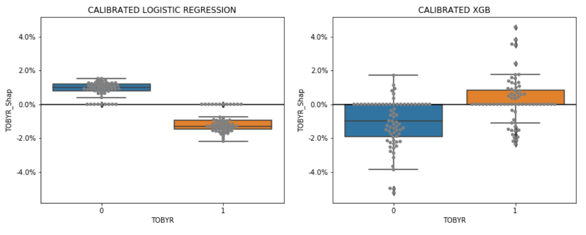
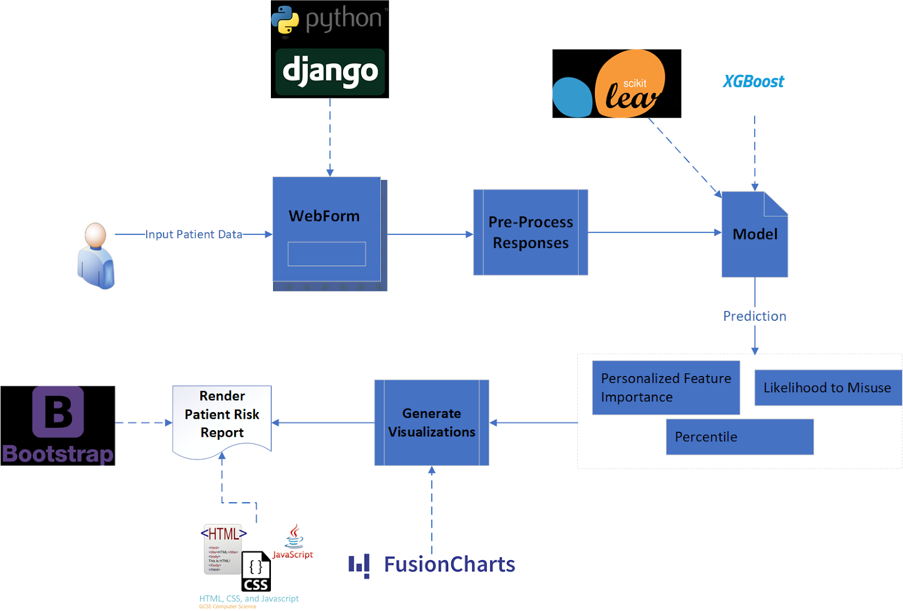

Our tool was trained on data gathered by The National Survey on Drug Use and Health (NSDUH) during the years 2015-2017. NSDUH is a nationwide study providing information on tobacco, alcohol, drug-use, mental health, and other health-related issues in the general population of the United States. The study collects data via individual interviews with approximately 70,000 teens and adults each year and the results are used to inform various public health programs, policies, and tools; such as our OMR-Tool. For more information on the survey, please visit their website:
Although NSDUH data set dates back to 1971, using only recent data was a key design consideration, because the opioid crisis has grown and changed
rapidly in recent years, and it is important for the model to make its predictions based on the current state of the opioid crisis. Additionally, the survey
underwent a large number of changes starting in 2015, making earlier data difficult to integrate. For example, the Diagnostic and Statistical Manual of
Mental Disorders (DSM-V) standards were incorporated into the survey in 2015, changing the diagnostic criteria for many of the included drug and mental health disorders.
The raw data set contained approximately 170,000 rows, with each row corresponding to a different survey respondent (individual respondents are not allowed to take the
survey more than once, in the same year or across multiple years). After removing participants who had not used prescription painkillers in the past year, the dataset contained
approximately 53,000 respondents.
The data set contains 2,631 features, each of which corresponds to either a question directly asked on the NSDUH survey, or a recoded variable created from aggregating multiple questions. The outcome variable for this tool is “Opioid Misuse”, which is defined as people who answered Yes to the question: “Have you ever, even once, used any prescription pain reliever in any way a doctor did not direct you to use it in the past 12 months?” This question is further defined to include using prescription pain relievers “without a prescription of your own”, “in greater amounts, more often, or longer than you were told to take it”, or “in any other way a doctor did not direct you to use it."
Each survey respondent was categorized as having misused or not misused opioids in the past 12 months (from survey date).
For variables that had only categorical responses, we one-hot-encoded them before adding to our model. For variables with a
mix of categorical and continuous responses (e.g., “At what age did you first smoke cigarettes” with a response option for “never smoked”), the
continuous responses were first binned, and then one-hot-encoded along with the categorical responses.
One key challenge was to narrow the feature space down from 2,631 variables in the survey down to roughly 25 variables/questions, which a patient could practically provide responses for on a form in a physician’s office. Several strategies for choosing or excluding features helped achieve this goal:
Because our outcome variable and certain misuse features for other drugs were specifically about the previous 12 months, the team had to consider the possibility of look-ahead bias; that is, for individuals who misused both opioids and another substance in the previous 12 months, which of the misuses came first? Perhaps misusing opioids caused individuals to misuse other substances, which would mean misuse of the other drug would be an outcome rather than a feature; this would lead to over-predicting risk for individuals who have used these other substances. However, it could also be the other way around, where other substance misuse came first and therefore is a legitimate predictor of opioid misuse; or it could be the underlying predictor of a propensity to misuse opioids (e.g., a patient with an “addictive personality”), regardless of which one came first.
To deal with this potential bias, when possible, the team selected features that encompassed wider time-frames than the 12 month misuse window. This tactic was not always possible, but the direction of the look-ahead bias erred on the side of over-predicting risk, which was the more conservative and therefore more tolerable direction of bias. This was one of the main reasons why the team was okay allowing a few features with this potential bias. If this project advances to the clinical trials stage, the team will prioritize eliminating look-ahead bias in a designed experiment.
In conclusion, while there is potentially look-ahead bias, it is by no means definitive, nor is it a detractor of this project’s effectiveness. Given the few features impacted and conservative direction of the potential bias, along with the opportunity to eliminate it in future stages, the team accepted this risk but also felt it was important to acknowledge.
We trained our model using 60% of the ~53,000 row dataset. After training the model, 25% of the data was used for calibration and validation, retaining the remaining 15% of the data to test model output.
The team tested numerous models of various complexity, starting with a simple logistic regression model to serve as a parsimonious baseline against which other models could be compared. The next model attempted was an Extreme Gradient Boost (XGBoost or XGB) model, an implementation of gradient boosted decision trees known to work particularly well for this kind of relatively small sized and dense data. Finally, a relatively simple neural network was also tested to assess model performance using a completely different family of models.
All three of these initial models are “uncalibrated,” and among them, XGBoost performed considerably better than the other two (see next section, Model Evaluation, for performance criteria). To further improve model performance, models were run through a calibrated classifier, which is specifically designed to improve performance of models’ predicted probabilities, and resulting in three additional calibrated versions of the models.
While ordinarily blackbox models such as XGBoost and neural networks have the undesirable tradeoff of sacrificing interpretability for performance, the use of Shapley values to communicate relative feature importance allows users to determine which features increase or decrease a patient’s risk score, something the team deemed vital for tool usefulness and adoption.
Brier Loss Score was the primary evaluation metric used to determine model performance. Though perhaps not as well known as other binary classification methods, it has actually been used since 1950, and for this use case,
was the more appropriate method to use because it is specifically designed to evaluate probability predictions. For example, in a group of 100 patients, all of whom have a predicted probability of approximately 20%,
Brier Loss Score will indicate the best performance for if 20 of those patients actually misused opioids and 80 did not. Furthermore, it is important to remember, unlike is often the case of binary classification problems,
the goal of this project is to predict the probability of opioid misuse, not to predict the binary outcome of a patient misusing or not misusing opioids. Therefore, traditional model evaluation techniques such as Precision,
Recall, F1 Score, and ROC AUC metrics were not helpful in evaluating desired probability outputs, as they focus on ratios of false positives and false negatives as opposed to measuring probability.
The team also generated calibration curves (a.k.a., reliability diagrams) from the test data for each model, which compare the relative frequency of what was observed to the predicted probability frequency.
While the best models are closest to the diagonal line representing a perfectly calibrated model (each probability predicted by the model is exactly correct), since no model is perfect, we preferred models
whose bias overestimated risk (the safe zone) rather than underestimated risk (the danger zone). The diagram below depicts model performance on these calibration curves.
In all the top performing models (those closest to the diagonal line), even at their worst performance, the predicted probabilities are only roughly seven percentage points away from the actual probabilities, a good practical validation of model performance.<\br>
The final model chosen for the OMR Tool is a calibrated XGBoost model. While the calibrated logistic regression model had a slightly lower Brier Loss Score, the team ultimately chose the calibrated XGBoost model because it incorporates feature interaction, making the personalized feature importance output (Shapley values, see below) far more aligned with existing literature. An example of the distribution of feature importance of the calibrated Logistic Regression model vs. the calibrated XGBoost model is shown here.
It is important for a doctor to know why each patient receives their particular risk score. While this task is a straightforward output for a simple uncalibrated logistic regression model, as model complexity increases, human understanding of the model typically decreases. To add clarity for our users and to help doctors understand how risk works for each of their patients individually, the OMR Tool provides a visual output of each user’s top five features (i.e., the patient’s answers to each question) that contributed most to their total risk score, displayed as a two-sided bar graph. A Shapley value tells us how much each feature contributes to the overall risk score. Mathematically, a Shapley value is the average marginal contribution of a feature value across all possible combinations of features from our model. For one patient, their previous non-opioid substance abuse may have been the primary feature that brought their risk score up, but for another patient, even if they also have the same history of non-opioid substance abuse, it could be the simple fact of, for example, being young and male that contributed most to their individual risk. Each patient is different, and the tool assesses each individual’s information holistically, rather than statically question by question as previous risk assessment tools have.
It is important to note, however, that this tool does not claim experimental causality between the features and opioid misuse; rather, it is claiming predictive association between the features and opioid misuse.
For example, it would be technically incorrect to say that being young and male causes a patient’s risk score to go up, but it is acceptable to say that being young and male is predictive of and/or contributes to a patient’s high risk score.
While achieving causal proof of the relationship between features and opioid misuse might be nice, the experiment required to achieve this claim is infeasible for many reasons. Moreover, there is a long precedent in the medical world to use predictive association,
as illustrated when a doctor asks if a patient has a family history of some condition. While family history can be predictive of a condition, it doesn’t mean that it’s been causally proven to drive that same condition,
yet doctors frequently use it as an indicator of patient risk for that condition.

Our multi-step webform was developed using Django, a python web-framework. We pre-process the webform responses and feed them into our trained calibrated XGBoost model and evaluation scripts.
Our scripts output three important pieces of information: the likelihood of the patient to misuse opioids, the corresponding percentile for that likelihood within the general population, and personalized feature importance through use of Shapley values.
These three data objects are inputs for our report and data visualizations. Fusion Charts, a JavaScript charting library, are used for this task. Lastly, Bootstrap components render these charts in Django on a Patient Risk Report that a physician can reference when meeting with the patient.